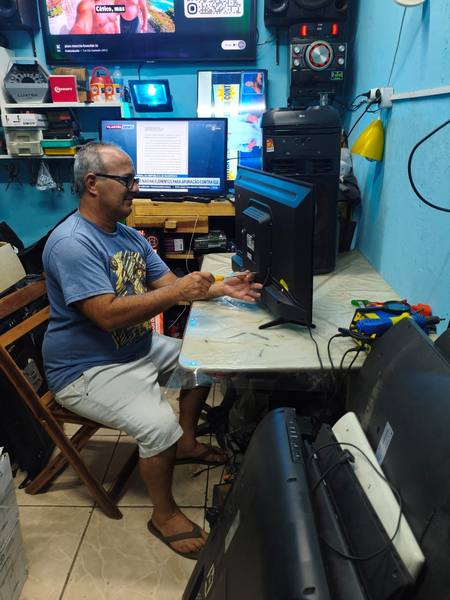

Microservice Eletrônica
Soluções em manutenção e reparo eletrônico para equipamentos domésticos e sistemas eletrônicos de ônibus rodoviários.

Uma empresa que entende o problema antes de resolver.
A Microservice Eletrônica atua com manutenção, diagnóstico e reparo de equipamentos eletrônicos, unindo atendimento próximo e conhecimento técnico para encontrar soluções de forma prática.
Somos especializados em equipamentos como TVs, aparelhos de som, micro-ondas e outros eletrônicos. Também atendemos sistemas eletrônicos de ônibus rodoviários, com serviços voltados a módulos de som, monitores, inversores e câmeras.
Soluções para diferentes necessidades.
Da eletrônica residencial aos sistemas embarcados de ônibus, oferecemos diagnóstico, manutenção e reparo com atendimento especializado.
Diagnóstico técnico preciso, manutenção prática e atendimento próximo.
Resolvemos problemas em TVs, som, micro-ondas e eletrônicos de ônibus rodoviários com foco em rapidez, confiabilidade e preço acessível — para residências e empresas.
Falar sobre meu problema →Entender a falha
Avaliamos o problema e identificamos o próximo passo técnico.
Definir o serviço
Serviço e condições são informados antes da execução.
Validar o funcionamento
Após o reparo, o equipamento é testado conforme o serviço realizado.
Tem um equipamento com problema?
Solicite uma avaliação e conte o que está acontecendo.